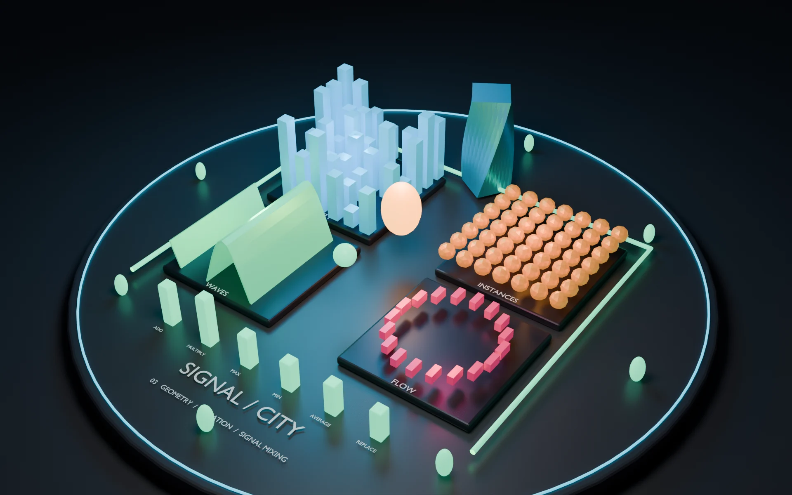
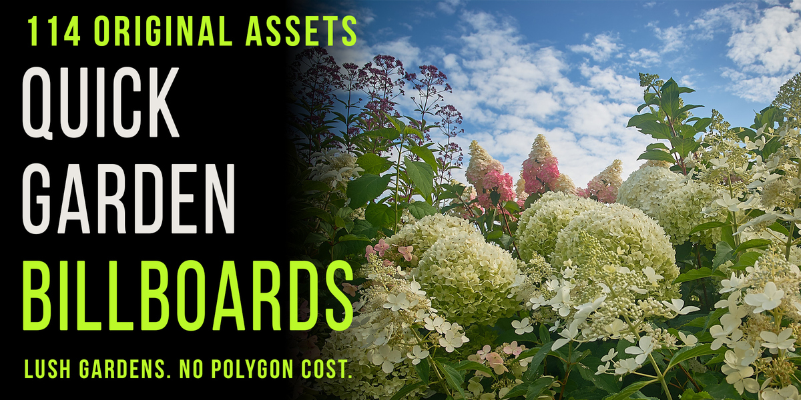
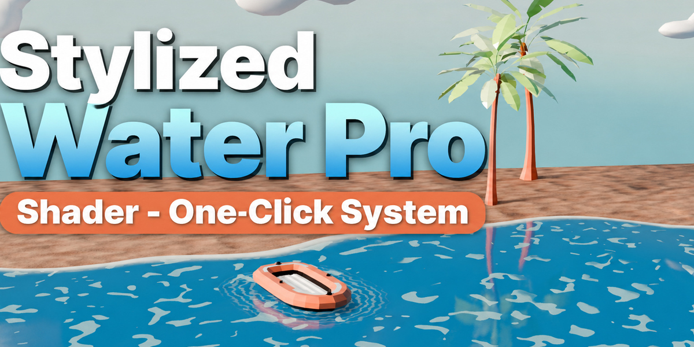

Audio-reactive animation
Quick Audio Visualizer
Turn music into editable Blender animation. Make objects, lights and materials react to frequencies, beats and custom audio ranges.
Explore add-onCreate audio-reactive animation, animated flocks, lush garden scenes and stylized water with practical Blender add-ons built for artists.
From music-driven motion to natural environments, find the Blender add-on that fits your project.

Turn music into editable Blender animation. Make objects, lights and materials react to frequencies, beats and custom audio ranges.
Explore add-onCreate animated bird flocks and insect swarms with 17 flying variants, eight editable flight paths and flexible formations.
View on Superhive
Add lightweight garden plants made from original photography. Browse the library, vary assets and face billboards toward the camera.
View on Superhive
Create animated stylized water with a procedural shader, Geometry Nodes waves, foam, ripples, floating objects and presets.
View on SuperhiveEvery add-on gives you a useful starting point while keeping the scene open for your ideas and adjustments.
Choose a reaction preset, a flock, a plant asset or a water setup that suits the shot.
Adjust the controls in Blender, arrange the result and combine it with your own models and materials.
Preview your work, refine the details and prepare the scene for animation or rendering.
I create Blender add-ons and visual assets to make common scene-building tasks clearer and more enjoyable.
More about the creatorThe collection includes Quick Audio Visualizer, Quick Birds & Insects, Quick Garden Billboards and Stylized Water Pro.
Requirements vary by add-on. Open its product page for the current Blender version, installation notes and compatibility details.
Open an add-on page on this site to explore its features, examples and workflow. Marketplace links show current product details.
Use the product links to open the available Superhive listing. Quick Audio Visualizer currently links to its feature page on this site.
Browse the add-ons or visit the Mamba CG creator page on Superhive.